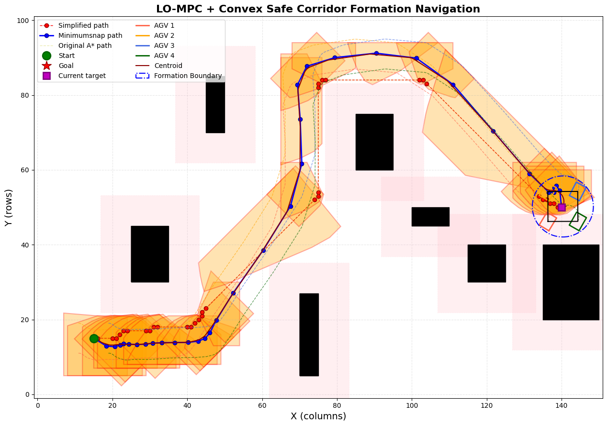

毕业设计 · 仿真与控制

基于凸安全走廊与 LO-MPC 的多移动机器人协同运动规划
针对密集复杂障碍物环境下多移动机器人协同通行与动态避障难题，从零设计并实现了“栅格构建膨胀 $\rightarrow$ 全局路径搜索剪枝 $\rightarrow$ 凸安全走廊生成 $\rightarrow$ Minimum Snap 轨迹优化 $\rightarrow$ 词典序多目标 MPC 编队控制”全套运动规划与控制流水线。
- 凸安全走廊 (Convex Safe Corridor)：构建二维栅格与安全膨胀地图，采用改进 A* 算法搜索可行路径并拓扑剪枝；研发走廊生成算法，将非凸自由通行空间精准映射为一系列时空相连的凸多面体硬约束集。
- Minimum Snap 连续轨迹优化：在走廊凸边界约束下求解 QP 问题，生成高阶连续多项式航迹，保证速度、加速度与加加速度 (Jerk) 连续平滑可导，并完成时间分配优化。
- 词典序模型预测控制 (LO-MPC)：基于 CasADi 搭建优化框架，按优先级分层求解编队保持刚度、动态避障硬约束与控制输入平滑性（控制周期 50ms）；在密集狭窄走廊中实测编队跟踪误差 < 0.05m。